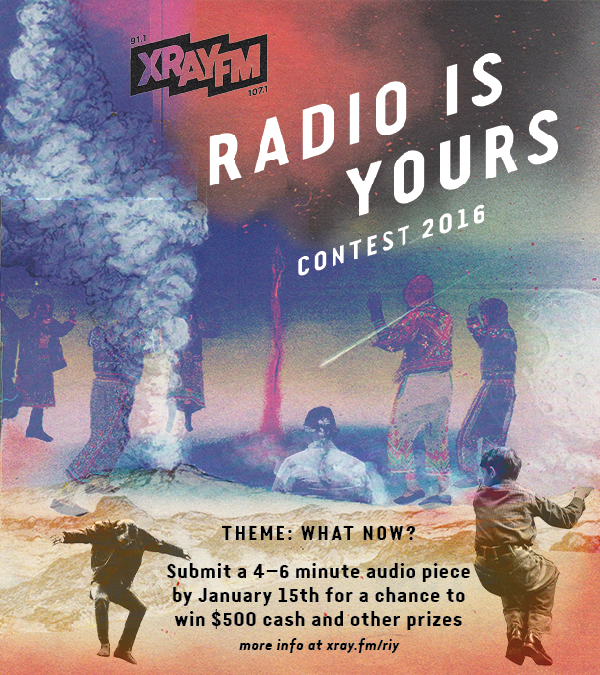

OVERVIEW
Managed marketing campaign for XRAY’s 2nd annual audio storytelling contest. Met with creatives and Communications Manager to create a project timeline for design and marketing deliverables for website, social media, video, on air, and print ad campaign. I recruited a duo of graphic designers to create engaging imagery that reflected the cultural, political and hyperlocal milestones of 2016 to reflect the contest theme: “What Now?”.
STRATEGY
Executed the campaign through various media outlets. Targeted Facebook ad campaign on segmented list of journalists, radio engineers, and public broadcasting and podcast fans. .
